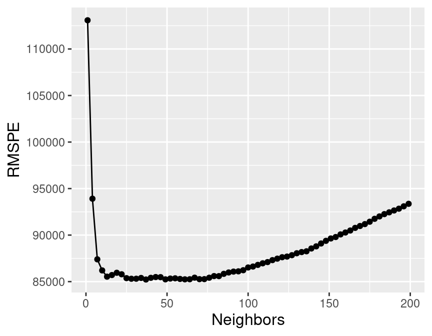
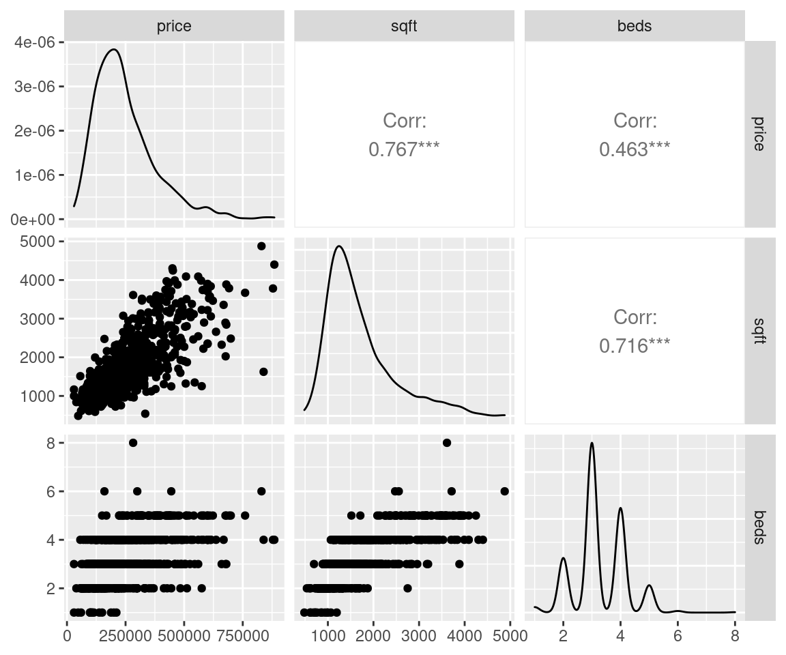

Chapter 8 Regression I: K-nearest neighbours
8.1 Overview
This chapter will provide an introduction to regression through K-nearest neighbours (K-NN) in a predictive context, focusing primarily on the case where there is a single predictor and single response variable of interest. The chapter concludes with an example of K-nearest neighbours regression with multiple predictors.
8.2 Chapter learning objectives
By the end of the chapter, students will be able to:
- Recognize situations where a simple regression analysis would be appropriate for making predictions.
- Explain the K-nearest neighbour (K-NN) regression algorithm and describe how it differs from K-NN classification.
- Interpret the output of a K-NN regression.
- In a dataset with two or more variables, perform K-nearest neighbour regression in R using a
tidymodelsworkflow - Execute cross-validation in R to choose the number of neighbours.
- Evaluate K-NN regression prediction accuracy in R using a test data set and an appropriate metric (e.g., root means square prediction error).
- In the context of K-NN regression, compare and contrast goodness of fit and prediction properties (namely RMSE vs RMSPE).
- Describe advantages and disadvantages of the K-nearest neighbour regression approach.
8.3 Regression
Regression, like classification, is a predictive problem setting where we want to use past information to predict future observations. But in the case of regression, the goal is to predict numerical values instead of class labels. For example, we could try to use the number of hours a person spends on exercise each week to predict whether they would qualify for the annual Boston marathon (classification) or to predict their race time itself (regression). As another example, we could try to use the size of a house to predict whether it sold for more than $500,000 (classification) or to predict its sale price itself (regression). We will use K-nearest neighbours to explore this question in the rest of this chapter, using a real estate data set from Sacremento, California.
8.4 Sacremento real estate example
Let’s start by loading the libraries we need and doing some preliminary exploratory analysis. The Sacramento real estate data set we will study in this chapter was originally reported in the Sacramento Bee, but we have provided it with this repository as a stable source for the data.
library(tidyverse)
library(tidymodels)
library(gridExtra)
sacramento <- read_csv('data/sacramento.csv')
head(sacramento)## # A tibble: 6 x 9
## city zip beds baths sqft type price latitude longitude
## <chr> <chr> <dbl> <dbl> <dbl> <chr> <dbl> <dbl> <dbl>
## 1 SACRAMENTO z95838 2 1 836 Residential 59222 38.6 -121.
## 2 SACRAMENTO z95823 3 1 1167 Residential 68212 38.5 -121.
## 3 SACRAMENTO z95815 2 1 796 Residential 68880 38.6 -121.
## 4 SACRAMENTO z95815 2 1 852 Residential 69307 38.6 -121.
## 5 SACRAMENTO z95824 2 1 797 Residential 81900 38.5 -121.
## 6 SACRAMENTO z95841 3 1 1122 Condo 89921 38.7 -121.The purpose of this exercise is to understand whether we can we use house size
to predict house sale price in the Sacramento, CA area. The columns in this
data that we are interested in are sqft (house size, in livable square feet)
and price (house price, in US dollars (USD). The first step is to visualize
the data as a scatter plot where we place the predictor/explanatory variable
(house size) on the x-axis, and we place the target/response variable that we
want to predict (price) on the y-axis:
eda <- ggplot(sacramento, aes(x = sqft, y = price)) +
geom_point(alpha = 0.4) +
xlab("House size (square footage)") +
ylab("Price (USD)") +
scale_y_continuous(labels = dollar_format())
eda
Based on the visualization above, we can see that in Sacramento, CA, as the size of a house increases, so does its sale price. Thus, we can reason that we may be able to use the size of a not-yet-sold house (for which we don’t know the sale price) to predict its final sale price.
8.5 K-nearest neighbours regression
Much like in the case of classification, we can use a K-nearest neighbours-based approach in regression to make predictions. Let’s take a small sample of the data above and walk through how K-nearest neighbours (knn) works in a regression context before we dive in to creating our model and assessing how well it predicts house price. This subsample is taken to allow us to illustrate the mechanics of K-NN regression with a few data points; later in this chapter we will use all the data.
To take a small random sample of size 30, we’ll use the function sample_n.
This function takes two arguments:
tbl(a data frame-like object to sample from)size(the number of observations/rows to be randomly selected/sampled)
Next let’s say we come across a 2,000 square-foot house in Sacramento we are interested in purchasing, with an advertised list price of $350,000. Should we offer to pay the asking price for this house, or is it overpriced and we should offer less? Absent any other information, we can get a sense for a good answer to this question by using the data we have to predict the sale price given the sale prices we have already observed. But in the plot below, we have no observations of a house of size exactly 2000 square feet. How can we predict the price?
small_plot <- ggplot(small_sacramento, aes(x = sqft, y = price)) +
geom_point() +
xlab("House size (square footage)") +
ylab("Price (USD)") +
scale_y_continuous(labels=dollar_format()) +
geom_vline(xintercept = 2000, linetype = "dotted")
small_plot
We will employ the same intuition from the classification chapter, and use the neighbouring points to the new point of interest to suggest/predict what its price should be. For the example above, we find and label the 5 nearest neighbours to our observation of a house that is 2000 square feet:
nearest_neighbours <- small_sacramento %>%
mutate(diff = abs(2000 - sqft)) %>%
arrange(diff) %>%
head(5)
nearest_neighbours## # A tibble: 5 x 10
## city zip beds baths sqft type price latitude longitude diff
## <chr> <chr> <dbl> <dbl> <dbl> <chr> <dbl> <dbl> <dbl> <dbl>
## 1 GOLD_RIVER z95670 3 2 1981 Residential 305000 38.6 -121. 19
## 2 ELK_GROVE z95758 4 2 2056 Residential 275000 38.4 -121. 56
## 3 ELK_GROVE z95624 5 3 2136 Residential 223058 38.4 -121. 136
## 4 RANCHO_CORDOVA z95742 4 2 1713 Residential 263500 38.6 -121. 287
## 5 RIO_LINDA z95673 2 2 1690 Residential 136500 38.7 -121. 310
Now that we have the 5 nearest neighbours (in terms of house size) to our new 2,000 square-foot house of interest, we can use their values to predict a selling price for the new home. Specifically, we can take the mean (or average) of these 5 values as our predicted value.
## # A tibble: 1 x 1
## predicted
## <dbl>
## 1 240612.
Our predicted price is $240612 (shown as a red point above), which is much less than $350,000; perhaps we might want to offer less than the list price at which the house is advertised. But this is only the very beginning of the story. We still have all the same unanswered questions here with K-NN regression that we had with K-NN classification: which \(K\) do we choose, and is our model any good at making predictions? In the next few sections, we will address these questions in the context of K-NN regression.
8.6 Training, evaluating, and tuning the model
As usual, we must start by putting some test data away in a lock box that we will come back to only after we choose our final model. Let’s take care of that now. Note that for the remainder of the chapter we’ll be working with the entire Sacramento data set, as opposed to the smaller sample of 30 points above.
set.seed(1234)
sacramento_split <- initial_split(sacramento, prop = 0.6, strata = price)
sacramento_train <- training(sacramento_split)
sacramento_test <- testing(sacramento_split)Next, we’ll use cross-validation to choose \(K\). In K-NN classification, we used accuracy to see how well our predictions matched the true labels. Here in the context of K-NN regression we will use root mean square prediction error (RMSPE) instead. The mathematical formula for calculating RMSPE is:
\[\text{RMSPE} = \sqrt{\frac{1}{n}\sum\limits_{i=1}^{n}(y_i - \hat{y}_i)^2}\]
Where:
- \(n\) is the number of observations
- \(y_i\) is the observed value for the \(i^\text{th}\) observation
- \(\hat{y}_i\) is the forcasted/predicted value for the \(i^\text{th}\) observation
A key feature of the formula for RMPSE is the squared difference between the observed target/response variable value, \(y\), and the prediction target/response variable value, \(\hat{y}_i\), for each observation (from 1 to \(i\)). If the predictions are very close to the true values, then RMSPE will be small. If, on the other-hand, the predictions are very different to the true values, then RMSPE will be quite large. When we use cross validation, we will choose the \(K\) that gives us the smallest RMSPE.
RMSPE versus RMSE When using many code packages (
tidymodelsincluded), the evaluation output we will get to assess the prediction quality of our K-NN regression models is labelled “RMSE”, or “root mean squared error”. Why is this so, and why not just RMSPE? In statistics, we try to be very precise with our language to indicate whether we are calculating the prediction error on the training data (in-sample prediction) versus on the testing data (out-of-sample prediction). When predicting and evaluating prediction quality on the training data, we say RMSE. By contrast, when predicting and evaluating prediction quality on the testing or validation data, we say RMSPE. The equation for calculating RMSE and RMSPE is exactly the same; all that changes is whether the \(y\)s are training or testing data. But many people just use RMSE for both, and rely on context to denote which data the root mean squared error is being calculated on.
Now that we know how we can assess how well our model predicts a numerical
value, let’s use R to perform cross-validation and to choose the optimal \(K\).
First, we will create a model specification for K-nearest neighbours regression,
as well as a recipe for preprocessing our data. Note that we use set_mode("regression")
now in the model specification to denote a regression problem, as opposed to the classification
problems from the previous chapters. Note also that we include standardization
in our preprocessing to build good habits, but since we only have one
predictor it is technically not necessary; there is no risk of comparing two predictors
of different scales.
sacr_recipe <- recipe(price ~ sqft, data = sacramento_train) %>%
step_scale(all_predictors()) %>%
step_center(all_predictors())
sacr_spec <- nearest_neighbor(weight_func = "rectangular", neighbors = tune()) %>%
set_engine("kknn") %>%
set_mode("regression")
sacr_vfold <- vfold_cv(sacramento_train, v = 5, strata = price)
sacr_wkflw <- workflow() %>%
add_recipe(sacr_recipe) %>%
add_model(sacr_spec)
sacr_wkflw## ══ Workflow ═════════════════════════════════════════════════════════════════════════════════════════════════════════════════════════════════════════════════════════════
## Preprocessor: Recipe
## Model: nearest_neighbor()
##
## ── Preprocessor ─────────────────────────────────────────────────────────────────────────────────────────────────────────────────────────────────────────────────────────
## 2 Recipe Steps
##
## ● step_scale()
## ● step_center()
##
## ── Model ────────────────────────────────────────────────────────────────────────────────────────────────────────────────────────────────────────────────────────────────
## K-Nearest Neighbor Model Specification (regression)
##
## Main Arguments:
## neighbors = tune()
## weight_func = rectangular
##
## Computational engine: kknnThe major difference you can see in the above workflow compared to previous
chapters is that we are running regression rather than classification. The fact
that we use set_mode("regression") essentially
tells tidymodels that we need to use different metrics (RMSPE, not accuracy)
for tuning and evaluation. You can see this in the following code, which tunes
the model and returns the RMSPE for each number of neighbours.
gridvals <- tibble(neighbors = seq(1,200))
sacr_results <- sacr_wkflw %>%
tune_grid(resamples = sacr_vfold, grid = gridvals) %>%
collect_metrics()
# show all the results
sacr_results## # A tibble: 400 x 6
## neighbors .metric .estimator mean n std_err
## <int> <chr> <chr> <dbl> <int> <dbl>
## 1 1 rmse standard 116654. 5 7186.
## 2 1 rsq standard 0.372 5 0.0463
## 3 2 rmse standard 101103. 5 5872.
## 4 2 rsq standard 0.453 5 0.0386
## 5 3 rmse standard 96708. 5 4211.
## 6 3 rsq standard 0.483 5 0.0277
## 7 4 rmse standard 93927. 5 3502.
## 8 4 rsq standard 0.503 5 0.0298
## 9 5 rmse standard 89642. 5 3768.
## 10 5 rsq standard 0.543 5 0.0303
## # … with 390 more rowsWe take the minimum RMSPE to find the best setting for the number of neighbours:
# show only the row of minimum RMSPE
sacr_min <- sacr_results %>%
filter(.metric == 'rmse') %>%
filter(mean == min(mean))
sacr_min## # A tibble: 1 x 6
## neighbors .metric .estimator mean n std_err
## <int> <chr> <chr> <dbl> <int> <dbl>
## 1 14 rmse standard 84356. 5 4050.Here we can see that the smallest RMSPE occurs when \(K =\) 14.
8.7 Underfitting and overfitting
Similar to the setting of classification, by setting the number of neighbours to be too small or too large, we cause the RMSPE to increase:

What is happening here? To visualize the effect of different settings of \(K\) on the regression model, we will plot the predicted values for house price from our K-NN regression models for 6 different values for \(K\). For each model, we predict a price for every possible home size across the range of home sizes we observed in the data set (here 500 to 4250 square feet) and we plot the predicted prices as a blue line:

Based on the plots above, we see that when \(K\) = 1, the blue line runs perfectly through almost all of our training observations. This happens because our predicted values for a given region depend on just a single observation. A model like this has high variance and low bias (intuitively, it provides unreliable predictions). It has high variance because the flexible blue line follows the training observations very closely, and if we were to change any one of the training observation data points we would change the flexible blue line quite a lot. This means that the blue line matches the data we happen to have in this training data set, however, if we were to collect another training data set from the Sacramento real estate market it likely wouldn’t match those observations as well. Another term that we use to collectively describe this phenomenon is overfitting.
What about the plot where \(K\) is quite large, say \(K\) = 450, for example? When \(K\) = 450 for this data set, the blue line is extremely smooth, and almost flat. This happens because our predicted values for a given x value (here home size), depend on many many (450) neighbouring observations. A model like this has low variance and high bias (intuitively, it provides very reliable, but generally very inaccurate predictions). It has low variance because the smooth, inflexible blue line does not follow the training observations very closely, and if we were to change any one of the training observation data points it really wouldn’t affect the shape of the smooth blue line at all. This means that although the blue line matches does not match the data we happen to have in this particular training data set perfectly, if we were to collect another training data set from the Sacramento real estate market it likely would match those observations equally as well as it matches those in this training data set. Another term that we use to collectively describe this kind of model is underfitting.
Ideally, what we want is neither of the two situations discussed above. Instead, we would like a model with low variance (so that it will transfer/generalize well to other data sets, and isn’t too dependent on the observations that happen to be in the training set) and low bias (where the model does not completely ignore our training data). If we explore the other values for \(K\), in particular \(K\) = 14 (as suggested by cross-validation), we can see it has a lower bias than our model with a very high \(K\) (e.g., 450), and thus the model/predicted values better match the actual observed values than the high \(K\) model. Additionally, it has lower variance than our model with a very low \(K\) (e.g., 1) and thus it should better transer/generalize to other data sets compared to the low \(K\) model. All of this is similar to how the choice of \(K\) affects K-NN classification (discussed in the previous chapter).
8.8 Evaluating on the test set
To assess how well our model might do at predicting on unseen data, we will
assess its RMSPE on the test data. To do this, we will first
re-train our K-NN regression model on the entire training data set,
using \(K =\) 14 neighbours. Then we will
use predict to make predictions on the test data, and use the metrics
function again to compute the summary of regression quality. Because
we specify that we are performing regression in set_mode, the metrics
function knows to output a quality summary related to regression, and not, say, classification.
set.seed(1234)
kmin <- sacr_min %>% pull(neighbors)
sacr_spec <- nearest_neighbor(weight_func = "rectangular", neighbors = kmin) %>%
set_engine("kknn") %>%
set_mode("regression")
sacr_fit <- workflow() %>%
add_recipe(sacr_recipe) %>%
add_model(sacr_spec) %>%
fit(data = sacramento_train)
sacr_summary <- sacr_fit %>%
predict(sacramento_test) %>%
bind_cols(sacramento_test) %>%
metrics(truth = price, estimate = .pred)
sacr_summary## # A tibble: 3 x 3
## .metric .estimator .estimate
## <chr> <chr> <dbl>
## 1 rmse standard 87737.
## 2 rsq standard 0.546
## 3 mae standard 65400.Our final model’s test error as assessed by RMSPE is 87737. But what does this RMSPE score mean? When we calculated test set prediction accuracy in K-NN classification, the highest possible value was 1 and the lowest possible value was 0. If we got a value close to 1, our model was “good;” and otherwise, the model was “not good.” What about RMSPE? Unfortunately there is no default scale for RMSPE. Instead, it is measured in the units of the target/response variable, and so it is a bit hard to interpret. For now, let’s consider this approach to thinking about RMSPE from our testing data set: as long as its not significantly worse than the cross-validation RMSPE of our best model, then we can say that we’re not doing too much worse on the test data than we did on the training data. So the model appears to be generalizing well to a new data set it has never seen before. In future courses on statistical/machine learning, you will learn more about how to interpret RMSPE from testing data and other ways to assess models.
Finally, what does our model look like when we predict across all possible house sizes we might encounter in the Sacramento area? We plotted it above where we explored how \(k\) affects K-NN regression, but we show it again now, along with the code that generated it:
set.seed(1234)
sacr_preds <- sacr_fit %>%
predict(sacramento_train) %>%
bind_cols(sacramento_train)
plot_final <- ggplot(sacr_preds, aes(x = sqft, y = price)) +
geom_point(alpha = 0.4) +
xlab("House size (square footage)") +
ylab("Price (USD)") +
scale_y_continuous(labels = dollar_format()) +
geom_line(data = sacr_preds, aes(x = sqft, y = .pred), color = "blue") +
ggtitle(paste0("K = ", kmin))
plot_final
8.9 Strengths and limitations of K-NN regression
As with K-NN classification (or any prediction algorithm for that manner), K-NN regression has both strengths and weaknesses. Some are listed here:
Strengths of K-NN regression
- Simple and easy to understand
- No assumptions about what the data must look like
- Works well with non-linear relationships (i.e., if the relationship is not a straight line)
Limitations of K-NN regression
- As data gets bigger and bigger, K-NN gets slower and slower, quite quickly 2. Does not perform well with a large number of predictors unless the size of the training set is exponentially larger
- Does not predict well beyond the range of values input in your training data
8.10 Multivariate K-NN regression
As in K-NN classification, in K-NN regression we can have multiple predictors.
When we have multiple predictors in K-NN regression, we have the same concern
regarding the scale of the predictors. This is because once again,
predictions are made by identifying the \(K\)
observations that are nearest to the new point we want to predict, and any
variables that are on a large scale will have a much larger effect than
variables on a small scale. Since the recipe we built above scales and centers
all predictor variables, this is handled for us.
We will now demonstrate a multivariate K-NN regression analysis of the
Sacramento real estate data using tidymodels. This time we will use
house size (measured in square feet) as well as number of bedrooms as our
predictors, and continue to use house sale price as our outcome/target variable
that we are trying to predict.
It is always a good practice to do exploratory data analysis, such as
visualizing the data, before we start modeling the data. Thus the first thing
we will do is use ggpairs (from the GGally package) to plot all the variables
we are interested in using in our analyses:

From this we can see that generally, as both house size and number of bedrooms increase, so does price. Does adding the number of bedrooms to our model improve our ability to predict house price? To answer that question, we will have to come up with the test error for a K-NN regression model using house size and number of bedrooms, and then we can compare it to the test error for the model we previously came up with that only used house size to see if it is smaller (decreased test error indicates increased prediction quality). Let’s do that now!
First we’ll build a new model specification and recipe for the analysis. Note that
we use the formula price ~ sqft + beds to denote that we have two predictors,
and set neighbors = tune() to tell tidymodels to tune the number of neighbours for us.
sacr_recipe <- recipe(price ~ sqft + beds, data = sacramento_train) %>%
step_scale(all_predictors()) %>%
step_center(all_predictors())
sacr_spec <- nearest_neighbor(weight_func = "rectangular", neighbors = tune()) %>%
set_engine("kknn") %>%
set_mode("regression")Next, we’ll use 5-fold cross-validation to choose the number of neighbours via the minimum RMSPE:
gridvals <- tibble(neighbors = seq(1,200))
sacr_k <- workflow() %>%
add_recipe(sacr_recipe) %>%
add_model(sacr_spec) %>%
tune_grid(sacr_vfold, grid = gridvals) %>%
collect_metrics() %>%
filter(.metric == 'rmse') %>%
filter(mean == min(mean)) %>%
pull(neighbors)
sacr_k## [1] 14Here we see that the smallest RMSPE occurs when \(K =\) 14.
Now that we have chosen \(K\), we need to re-train the model on the entire training data set, and after that we can use that model to predict on the test data to get our test error.
sacr_spec <- nearest_neighbor(weight_func = "rectangular", neighbors = sacr_k) %>%
set_engine("kknn") %>%
set_mode("regression")
knn_mult_fit <- workflow() %>%
add_recipe(sacr_recipe) %>%
add_model(sacr_spec) %>%
fit(data = sacramento_train)
knn_mult_preds <- knn_mult_fit %>%
predict(sacramento_test) %>%
bind_cols(sacramento_test)
knn_mult_mets <- metrics(knn_mult_preds, truth = price, estimate = .pred)
knn_mult_mets## # A tibble: 3 x 3
## .metric .estimator .estimate
## <chr> <chr> <dbl>
## 1 rmse standard 85152.
## 2 rsq standard 0.572
## 3 mae standard 63575.This time when we performed K-NN regression on the same data set, but also included number of bedrooms as a predictor we obtained a RMSPE test error of 85152. This compares to a RMSPE test error of 87737 when we used only house size as the single predictor. Thus in this case, we did not improve the model by a large amount by adding this additional predictor.
We can also visualize the model’s predictions overlaid on top of the data. This time the predictions will be a surface in 3-D space, instead of a line in 2-D space, as we have 2 predictors instead of 1.
We can see that the predictions in this case, where we have 2 predictors, form a surface instead of a line. Because the newly added predictor, number of bedrooms, is correlated with price (USD) (meaning as price changes, so does number of bedrooms) and not totally determined by house size (our other predictor), we get additional and useful information for making our predictions. For example, in this model we would predict that the cost of a house with a size of 2,500 square feet generally increases slightly as the number of bedrooms increases. Without having the additional predictor of number of bedrooms, we would predict the same price for these two houses.